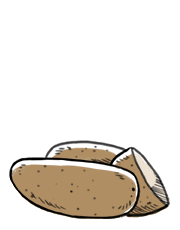

russet potatoes
Russet potatoes are large with a dark brown skin. Their flesh is white, dry and mealy. Russet potatoes are a good source of vitamin C and iron.
Russet potatoes can be baked, mashed, and are often made into fries. Russet potatoes keep for up to a month if stored in a cool, dry and dark place.
potatoes
The potato is a root vegetable, of the plant solanum tuberosum. They are a staple throughout the world, and the 4th largest food crop after corn, wheat and rice. After years of selective breeding, there are now 1,000 different types of potatoes. Potatoes should not be eaten raw, because we don't digest it well.